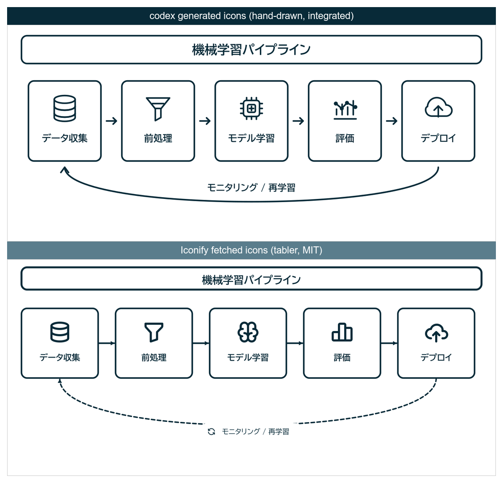

Claude Code から codex を呼んで論文の図を作る — アイコン調達に Iconify を足した話
論文・スライド向けの構成図を Claude Code から codex CLI 経由で SVG 生成するワークフロー (figure-codex-svg skill) に, アイコンを Iconify から自動取得するステップを足した. codex 生成アイコンと Iconify 既製アイコンを同じ図で比較し, どちらを既定にするか決めるまでの経緯.
きっかけ
論文やら申請書やらのポンチ絵は今までflaticon等の画像サイトからiconを取得→pptでお絵かき→PNG保存で行っていたが, 諸々の資料作成をAI Agentに任せる際にはこれの作成がネックになっていた,かつ,codexのimagegenで直接AI生成すると, あまりにもAIになるので, 研究っぽいポンチ絵を作成する機能を作りたかった.
一発でAIが納得するポンチ絵を作ることはできないので, Claude Code から codex CLI を呼び出して iconをimagegenで生成 → それを組み合わせた SVG を生成 → SVGのHTMLをclaudeが指示に従って編集する, というワークフローを figure-codex-svg という skill にまとめて使っていた.
最近はあまりcodexは使わずclaudeに統一しているので,「アイコン部分だけは既製の素材を自動で持ってきた方が速いし綺麗 & claudeで完結する」という思いつきから, アイコン調達のステップを足してみた. その結果と, 最終的にどう落ち着いたかを記録しておく. 能力的には現時点ではcodexが良いっぽい(opus 4.7時点では確かにそう思う,4.8はさっき使い始めたから分からん.)けど,毎月状況が変わっていちいち移行するのが怠いので,claudeメインにしている.
既存のワークフロー: figure-codex-svg
- 構造とアイコンを生成: codex に「白背景・黒線の pictogram スタイルで, この行構造の図を SVG で作れ」と指示する. アイコンは同一 SVG 内に
<defs><symbol>として定義させるか, 数が多ければ個別 SVG ファイルに分けて<image>参照させる. - レイアウト改善ループ: codex は自分が出力した PNG を
view_imageで見られるので, 「生成 → ラスタライズ → 目視 → 修正」を自律的に回せる. 矢印の重なりや文字とアイコンの衝突を, 人間が指摘する前に自己修正してくれる.
codex を Claude Code の Bash 経由で叩くときの実務的な注意.
- stdin を閉じる (
</dev/null). codex はプロンプト引数を受け取った後も stdin の EOF を待つ. - 画像は
--image=FILEで渡す.-i FILEは greedy で後続のプロンプトまで画像扱いしてしまう. --skip-git-repo-checkを付ける. 論文ディレクトリは git repo でないことが多く, trust check で即終了する.- 日本語ラベルを使うなら font-family に
"BIZ UDPGothic", "Hiragino Sans", ...のフォールバック列を必ず指定する. 忘れると rsvg-convert で豆腐 (□) になる.
SVG → PNG/PDF は rsvg-convert を使う. -w と -h を両方指定して aspect ratio を固定するのがコツ.
rsvg-convert -w 1600 -h 1200 fig/main.svg -o fig/main.png # PNG
rsvg-convert -f pdf -o fig/main.pdf fig/main.svg # PDF (ベクター維持)足したもの: Iconify からアイコンを自動取得
アイコンの調達先として Iconify を使うことにした. Iconfiは
- API キー不要・無料 (
api.iconify.design) - 20 万以上のアイコン (Material Symbols, Tabler, Lucide, Carbon など 150+ セット)
- ライセンスがクリア (多くが MIT / Apache / ISC / CC-BY) で論文掲載が安全
商用素材サイトのように API 契約や帰属表示の判断で悩まなくていいのが大きい.
検索・取得・ライセンス確認をする小さなシェルスクリプト (iconify.sh) を skill に同梱した.
# キーワードで候補を探す (prefix:name 形式で返る)
./iconify.sh search "neural network" 12
# コレクションのライセンスを確認 (論文掲載前に必須)
./iconify.sh license tabler # -> Tabler Icons | MIT (MIT)
# 単体取得 (色=黒, サイズ=128 に正規化)
./iconify.sh fetch tabler:server fig/icons/server.svg 000000 128
# manifest で一括取得 (1 行 "prefix:name [出力名]")
cat > fig/icons.txt <<'EOF'
tabler:chart-line econ
tabler:book ledger
tabler:code it
tabler:shield-check verify
EOF
./iconify.sh batch fig/icons.txt fig/icons 000000 128Iconify のアイコンは viewBox 0 0 24 24 で fill="currentColor" (または stroke="currentColor") になっている. URL に ?color=000000 を付けると currentColor が置換されるので, 白背景・黒線の pictogram スタイルに揃えられる. 取得した個別 SVG を, codex が生成するメイン図から <image href="icons/server.svg"/> で参照する.
スタイルを揃えるコツは, 1 つの図の中ではアイコンのコレクション (prefix) を統一すること. 全部 tabler:* か全部 lucide:* にすると線幅と角丸が一貫する. 検索結果には同じモチーフが複数セットで並ぶので, prefix を固定して選ぶ.
比較: codex 生成アイコン vs Iconify 既製アイコン
同じ「機械学習パイプライン」の構成図を, 全く同じレイアウト・同じ黒線スタイルで 2 通り作って並べた. 上が codex に図ごと描き起こさせた版 (アイコンも codex 生成), 下が同じレイアウトでアイコンだけ Iconify (tabler) の既製品に差し替えた版.

率直な結論として, この図に関しては codex 生成アイコンの方が馴染みが良い.
- Iconify のアイコンは, 個人的にはあまりクオリティが高くない.
- codex が図と一体で描き起こしたアイコンの方が, 意図に最適化されているので良い.
このあたりはIconfyのiconを選択する基準などを詰めれば改善するかもしれない.
落とし所: codex 生成を基本, Iconify は補助
| 方式 | 優先度 | 使いどころ |
|---|---|---|
| codex 生成 | 基本 (デフォルト) | ほぼ全ての図. 図全体との一体感, 独自モチーフ, ドメイン固有の概念図 |
| Iconify 取得 | 補助 | codex が安定しない汎用ピクトグラム (OS/ブランド/標準 UI) の下絵, 素早い叩き台, 特定セットの体裁に意図的に寄せたい場合, codex 解約したとき用 |
判断フローは「まず codex 生成で進める → 特定のアイコンだけ codex が安定しない, または既製の体裁に寄せたい場合に限り, そのアイコンを Iconify で補う」. Iconify を混ぜる場合も白背景・黒線に揃え, 最後に codex の view_image レビューで図全体との整合を確認する.